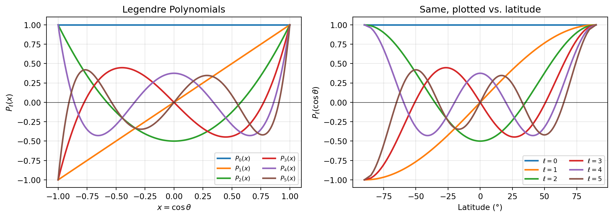

import numpy as np
import matplotlib.pyplot as plt
from scipy.special import legendre
x = np.linspace(-1, 1, 500)
theta = np.degrees(np.arccos(x)) # convert to latitude-like
fig, axes = plt.subplots(1, 2, figsize=(11, 4))
# Left: as function of x = cos(theta)
ax = axes[0]
for ell in range(6):
Pl = legendre(ell)
ax.plot(x, Pl(x), linewidth=2, label=rf'$P_{ell}(x)$')
ax.set_xlabel(r'$x = \cos\theta$')
ax.set_ylabel(r'$P_\ell(x)$')
ax.set_title('Legendre Polynomials')
ax.legend(fontsize=8, ncol=2)
ax.axhline(0, color='k', linewidth=0.5)
ax.grid(True, alpha=0.3)
# Right: as function of colatitude (more physical)
ax = axes[1]
lat = 90 - theta # geographic latitude
for ell in range(6):
Pl = legendre(ell)
ax.plot(lat, Pl(x), linewidth=2, label=rf'$\ell={ell}$')
ax.set_xlabel('Latitude (°)')
ax.set_ylabel(r'$P_\ell(\cos\theta)$')
ax.set_title('Same, plotted vs. latitude')
ax.legend(fontsize=8, ncol=2)
ax.axhline(0, color='k', linewidth=0.5)
ax.grid(True, alpha=0.3)
plt.tight_layout()
plt.show()